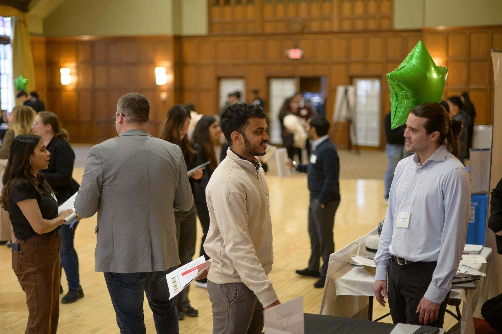
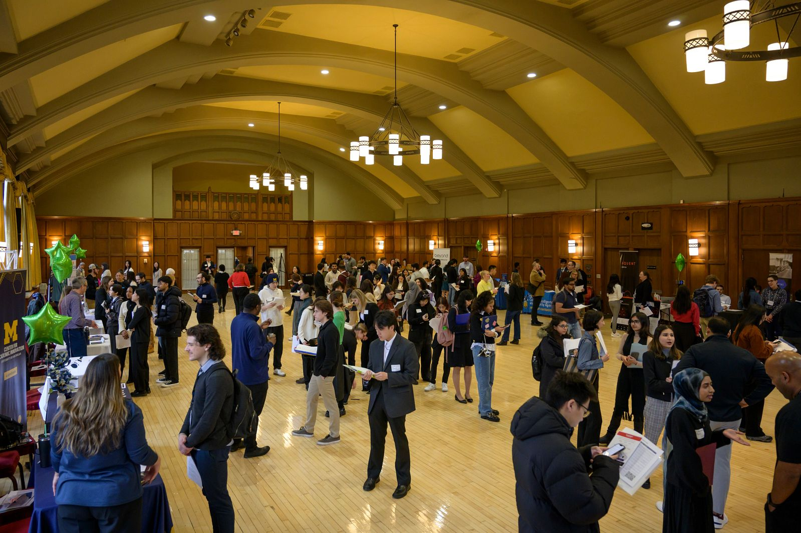
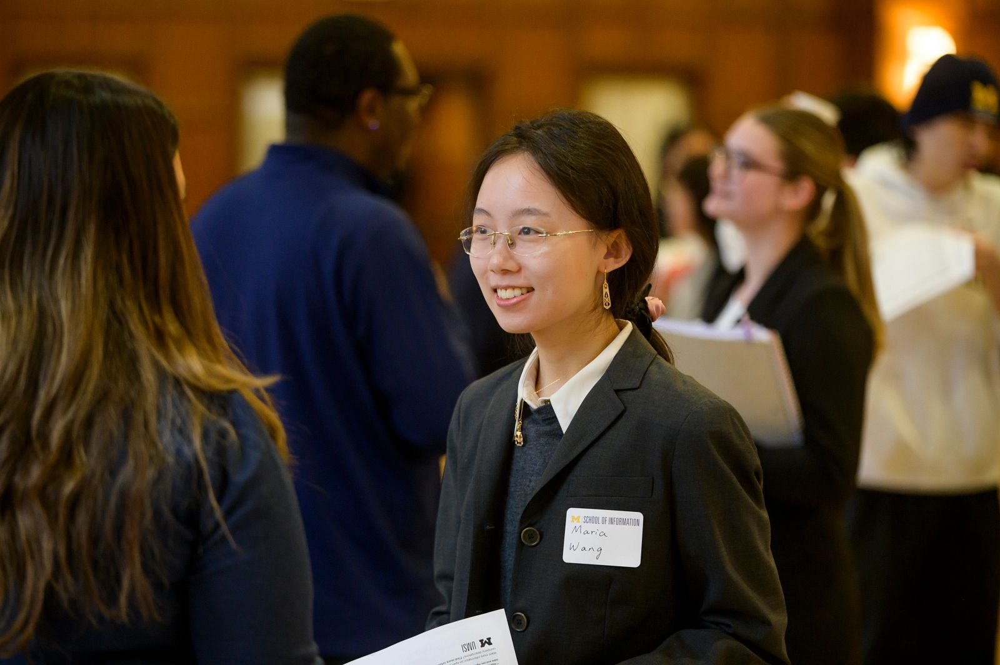

Networking & Connections

Get Started
Find People
Identify alumni and peers in target roles/companies.
Outreach Email
Short, respectful, specific ask for a 15–20 min chat.
Informational Interview
Use TIARA to structure your questions and take notes.
Why Networking
- Learn real expectations from practitioners.
- Discover roles through referrals.
Outreach Scripts
Personalize each message. Keep it short and specific.
- Coffee chat: “Hi, I’m a UMSI student interested in your company. Could we chat for 15–20 minutes?”
- Follow-up: “Thanks for your time—here’s what I learned… May I stay in touch?”

Track Conversations
- Maintain a simple log (name, company, date, next step).
- Send thanks within 24 hours; note key takeaways and referrals.
